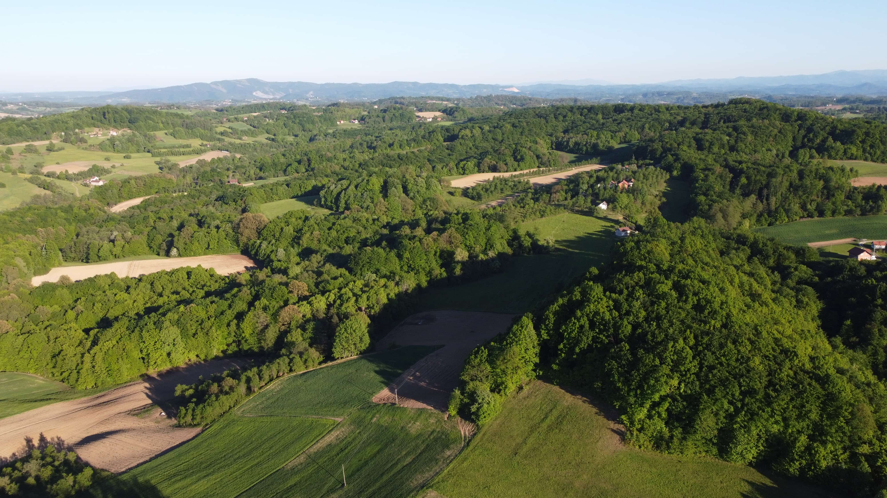
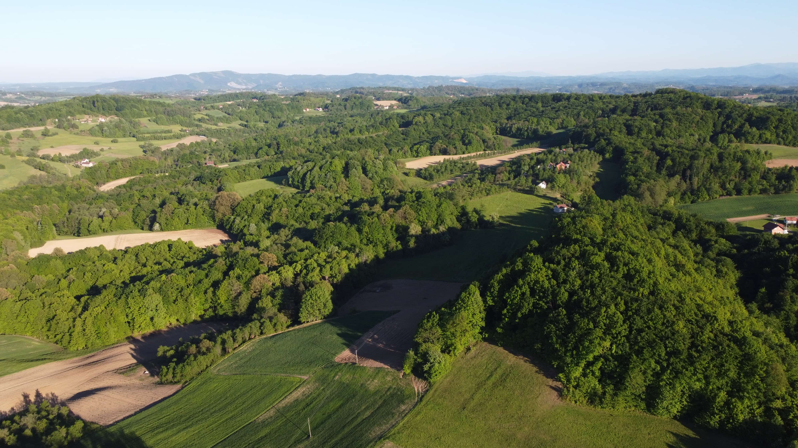

Trenutno stanje i temparatura
Prognoza za sutra
Osnovni podaci o selu Gusak
Gusak je selo u opštini Prnjavor. Nalazi se na 200-300 m.n.v., najvišlja tačka je 342 m.n.v. Površina je 4,70 km², udaljeno je 15 km od opštinskog centra. Pripada mjesnoj zajednici Gusak-Gajevi. Razbijenog je tipa, a zaseoci su Gornji i Donji Gusak. Smješteno je na brežuljkastom terenu, prekrivenom oranicama i bjelogoričnom šumom. U ataru postoje potoci Vasiljevac, Jelinac i Ugljarica, te izvori Bogdanovac i Dobra Voda. Prema popisu iz 2013. godine selo ima 59 domaćinstava i 179 stanovnika. Mještani se uglavnom bave poljoprivredom. Najbliža crkva je u Potočanima.
Istorija
U defteru iz 1604. godine u Nahiji Kobaš pominje se napusteno
selo Gusak. Selo je 1879.godine imalo 18 domaćinstava i 145
stanovnika (pravoslavci). 1895. godine imalo je 167 stanovnika.
Prema popisu iz 1971. godine 217 stanovnika. U Drugom svjetskom ratu
poginuo je jedan borac NOBJ i četiri civila. Dana 14.07.2001. godine na mjestu
gdje se ukrštaju lokalni putevi Koin-Han, Vršani i Kokori, sagrađeno je i otkriveno
Tokom rata 1992-1995.
iz mjesne zajednice Gusak-Gajevi poginulo je šest boraca VRS, iz MBO Gusak i
Gajevi, koji svoje živote položiše za Republiku Srpsku, za slobodu svojih porodica,
za našu slobodu i slobodu ovih prostora. Sa prostora sela Gusak i Gajevi svoje živote
su položili i na spomen obilježje upisani sledeći borci:
1. Vrhovac Miladin,
2. Vasilić Ljubiša,
3. Ljubojević Živojin,
4. Vrhovac Perica,
5. Kalabić Milomir,
6. Madžarić Nebojša.
Svake godine 14. jula na praznik Svetih mučenika i besrebrenika Kozme i Damjana
na Gusačkom Groblju u 12 časova održavaju se žitne molitve za spas sela od svakojakih
opasnosti, za zdravlje mještana, stoke, kao i za zaštitu usjeva od nepogoda. Nakon toga se prelivaju grobovi umrlih članova porodica
od strane sveštenika na zahtjev parohijana. U 14 časova se vrši patastos poginulim borcima kod spomen obilježja gdje prisustvuje veći broj zvanica.
U večernjim časovima na obližnjem igralištu održava se memorijalni turnir u malom fudbalu posvećen poginulim borcima.
Ujedno na pomenutim mjestima se održava zbor koji traje do kasno u noć.
Galerija